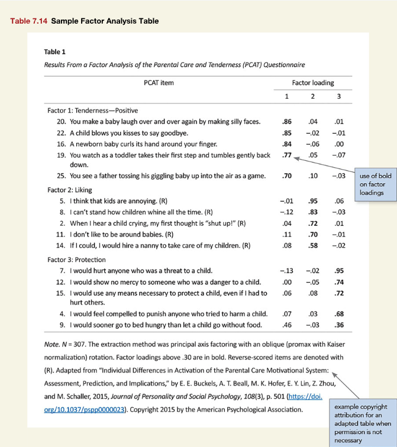

library(apa7)
library(flextable)
library(ftExtra)
library(tidyverse)
set_flextable_defaults(theme_fun = theme_apa,
font.family = "Times New Roman")Recreating APA Manual Table 7.14 in R with apa7
R
APA Style
Demonstration of the apa7 package, a flextable extension package
Making tables in APA style (Part 14 of 24)
In this 24-part series, each of the tables in Chapter 7 of the Publication Manual of the American Psychological Association (7th Edition) is recreated with apa7, flextable, easystats, and tidyverse functions.
NoteHighlights
Figure 1
Screenshot of the APA Manual’s Table 7.14

The PCAT items have row titles, have hanging indents, and are decimal aligned. This kind of formatting is not too hard in MS Word, but requires some pre-processing for flextable. We can use align_chr to align by the first decimal. However, we need to prevent additional spaces to be added to the right side of the first decimals. Doing so will prevent strange formatting side effects after applying hanging_indent. So we specify side = left in align_chr to add additional figures spaces on the left side only.
The colformat_md function automatically formats text to markdown. Unfortunately, the PCAT items look like ordered lists to the markdown parser. To prevent this conversion, we insert a non-breaking space ( ) after the first decimal.
The factor loadings need to be bolded selectively (if > .3). The flextable::bold function is great for selective bolding. However, the loadings are not really numbers by the time they get to flextable (i.e., they have text minus signs, figure spaces, and leading zeroes removed), which makes conditional processing tricky. It was easier to preprocess the loadings, selectively surrounding them with markdown bold tags with bold_md.
# Make data
d <- tibble(
Factor = c("Factor 1: Tenderness--Positive",
"Factor 1: Tenderness--Positive","Factor 1: Tenderness--Positive",
"Factor 1: Tenderness--Positive",
"Factor 1: Tenderness--Positive","Factor 2: Liking","Factor 2: Liking",
"Factor 2: Liking","Factor 2: Liking","Factor 2: Liking",
"Factor 3: Protection","Factor 3: Protection","Factor 3: Protection",
"Factor 3: Protection","Factor 3: Protection"),
`PCAT Item` = c("20. You make a baby lagh over and over again by making silly faces.",
"22. A child blows you kisses to say goodbye.",
"16. A newborn baby curls its hand around your finger.",
"19. You watch as a toddler takes their first step and tumboles gently back down.",
"25. You see a father tossing his giggling baby up into the air as a game.",
"5. I think that kids are annoying. (R)",
"8. I can't stand how children whine all the time. (R)",
"2. When I hear a child crying, my first thought is \"shut up!\" (R)",
"11. I don't like to be around babies. (R)",
"14. If I could, I would hire a nanny to take care of my children. (R)",
"7. I would hurt anyone who was a threat to a child.",
"12. I would show no mercy to someone who was a danger to a child.",
"15. I would use any means necessary to protect a child, even if I had to hurt others.",
"4. I would feel compelled to punish anyone who tried to hurt a child.",
"9. I would sooner go to bed hungry than let a child go without food."),
`Factor loading_1` = c(
0.86, 0.85, 0.84, 0.77, 0.7, -0.01, -0.12,
0.04, 0.11, 0.08, -0.13, 0.0, 0.06, 0.07, 0.46),
`Factor loading_2` = c(
0.04, -0.02, -0.06, 0.05, 0.1, 0.95, 0.83,
0.72, 0.7, 0.58, -0.02, -0.05, 0.08, 0.03, -0.03),
`Factor loading_3` = c(
0.01, -0.01, 0, -0.07, -0.03, 0.06, -0.03,
0.01, -0.01, -0.02, 0.95, 0.74, 0.72, 0.68, 0.36)
)
# Format data
d_formatted <- d |>
mutate(`PCAT Item` = align_chr(`PCAT Item`, side = "left") |>
hanging_indent(width = 75, indent = 6) |>
str_replace("\\. ", ". ")) |>
mutate(
across(
starts_with("Factor loading"),
\(x) {
y <- align_chr(x, trim_leading_zeros = TRUE)
ifelse(abs(x) > .3, bold_md(y), y)
}
)
)
# Make table
d_formatted |>
apa_flextable(row_title_column = Factor,
line_spacing = 1.5) |>
align(j = 1, align = "left") Table 1
Results From a Factor Analysis of the Parental Care and Tenderness (PCAT) Questionnaire
PCAT Item | Factor loading | ||
|---|---|---|---|
1 | 2 | 3 | |
Factor 1: Tenderness–Positive | |||
20. You make a baby lagh over and over again by making silly faces. | .86 | .04 | .01 |
22. A child blows you kisses to say goodbye. | .85 | −.02 | −.01 |
16. A newborn baby curls its hand around your finger. | .84 | −.06 | .00 |
19. You watch as a toddler takes their first step and tumboles gently back | .77 | .05 | −.07 |
25. You see a father tossing his giggling baby up into the air as a game. | .70 | .10 | −.03 |
Factor 2: Liking | |||
5. I think that kids are annoying. (R) | −.01 | .95 | .06 |
8. I can’t stand how children whine all the time. (R) | −.12 | .83 | −.03 |
2. When I hear a child crying, my first thought is “shut up!” (R) | .04 | .72 | .01 |
11. I don’t like to be around babies. (R) | .11 | .70 | −.01 |
14. If I could, I would hire a nanny to take care of my children. (R) | .08 | .58 | −.02 |
Factor 3: Protection | |||
7. I would hurt anyone who was a threat to a child. | −.13 | −.02 | .95 |
12. I would show no mercy to someone who was a danger to a child. | .00 | −.05 | .74 |
15. I would use any means necessary to protect a child, even if I had to | .06 | .08 | .72 |
4. I would feel compelled to punish anyone who tried to hurt a child. | .07 | .03 | .68 |
9. I would sooner go to bed hungry than let a child go without food. | .46 | −.03 | .36 |
Note. N = 307. The extraction method was principal axis factoring with an oblique (promax with Kaiser Normalization) rotation. Factor loadings above .30 are in bold. Reverse-scored items are denoted with (R). Adapted from “Individual Differences in Activation of the Parental Care Motivational System: Assessment, Prediction, and Implications,” by E. E. Buckels, A. T. Beall, M. K. Hofer, E. Y. Lin, Z. Zhou, and M. Schaller, 2015, Journal of Personality and Social Psychology, 108(3), p. 501 (https://doi.org/10.1037/pspp0000023). Copyright 2015 by the American Psychological Association.